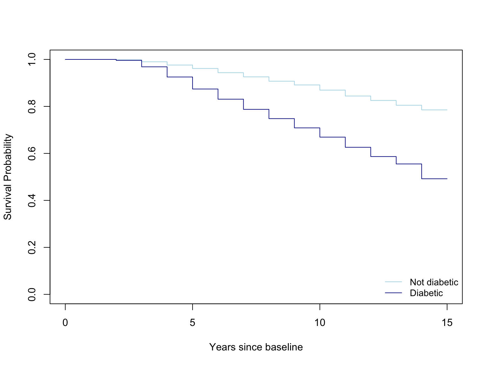

# Load in libraries
library(haven)
library(dplyr)
library(survival)
library(ggthemes)Survival Analysis
FHS <- read_sav("data/Cox Prop Hazard Regression Data.sav")FHS_surv <- Surv(time = FHS$TimeDeathYears,
event = FHS$death)
summary(survfit(FHS_surv ~ 1))Call: survfit(formula = FHS_surv ~ 1)
time n.risk n.event survival std.err lower 95% CI upper 95% CI
2 3263 6 0.998 0.00075 0.997 1.000
3 3257 32 0.988 0.00188 0.985 0.992
4 3225 53 0.972 0.00288 0.966 0.978
5 3172 57 0.955 0.00364 0.948 0.962
6 3115 65 0.935 0.00432 0.926 0.943
7 3050 64 0.915 0.00488 0.906 0.925
8 2986 66 0.895 0.00537 0.884 0.905
9 2920 58 0.877 0.00575 0.866 0.888
10 2862 76 0.854 0.00618 0.842 0.866
11 2786 87 0.827 0.00662 0.814 0.840
12 2699 67 0.807 0.00691 0.793 0.820
13 2632 69 0.785 0.00719 0.772 0.800
14 2563 75 0.762 0.00745 0.748 0.777Kaplan-Meier Plot
plot(FHS_surv,
xlab = "Years Since Baseline", # x-axis label
ylab ="Survival Probability", # y-axis label
main = "Overall survival curve", # figure title
ylim = c(0, 1),
mark.time = TRUE,
conf.int = FALSE
)
FHS_fit_db <- survfit(Surv(TimeDeathYears, death) ~ diabetes, data = FHS)
col_diabetes <- c("lightblue", "darkblue")
plot(
FHS_fit_db,
col = col_diabetes,
xlab = "Years since baseline",
ylab = "Survival Probability")
legend(
"bottomright",
legend = c("Not diabetic","Diabetic"),
col = col_diabetes,
lty = 1,
cex = .9,
bty = "n")
survminer::ggsurvplot(
FHS_fit_db,
data = FHS,
conf.int = TRUE,
surv.scale = "percent", # present probabilities in the y axis in %
break.time.by = 1, # present the time axis with an increment of years
xlab = "Time Since baseline (Years)",
ylab = "Survival Probability",
pval = T, # print p-value at these plot coordinates
risk.table = T, # print the risk table at bottom
legend.title = "Diabetic Status", # legend characteristics
legend.labs = c("not diabetic","diabetic"),
font.legend = 10,
palette = "Dark2", # specify color palette
surv.median.line = "hv", # draw horizontal and vertical lines to the median survivals
ggtheme = theme_few()
)
Cox Regression and Hazard Ratios
FHS_cox <- coxph(
Surv(TimeDeathYears, death) ~ diabetes + cursmoke + diabetes +
educ + prevchd + age + bmi + sex,
data = FHS
)
summary(FHS_cox)Call:
coxph(formula = Surv(TimeDeathYears, death) ~ diabetes + cursmoke +
diabetes + educ + prevchd + age + bmi + sex, data = FHS)
n= 3165, number of events= 746
(98 observations deleted due to missingness)
coef exp(coef) se(coef) z Pr(>|z|)
diabetes 0.732430 2.080129 0.100183 7.311 2.65e-13 ***
cursmoke 0.433427 1.542535 0.080983 5.352 8.70e-08 ***
educ -0.124079 0.883310 0.036412 -3.408 0.000655 ***
prevchd 0.781816 2.185437 0.086662 9.021 < 2e-16 ***
age 0.091694 1.096030 0.004996 18.353 < 2e-16 ***
bmi -0.014066 0.986032 0.009644 -1.459 0.144676
sex 0.657285 1.929546 0.074741 8.794 < 2e-16 ***
---
Signif. codes: 0 '***' 0.001 '**' 0.01 '*' 0.05 '.' 0.1 ' ' 1
exp(coef) exp(-coef) lower .95 upper .95
diabetes 2.0801 0.4807 1.7093 2.5314
cursmoke 1.5425 0.6483 1.3161 1.8079
educ 0.8833 1.1321 0.8225 0.9487
prevchd 2.1854 0.4576 1.8440 2.5900
age 1.0960 0.9124 1.0853 1.1068
bmi 0.9860 1.0142 0.9676 1.0048
sex 1.9295 0.5183 1.6666 2.2340
Concordance= 0.761 (se = 0.009 )
Likelihood ratio test= 685.5 on 7 df, p=<2e-16
Wald test = 687.1 on 7 df, p=<2e-16
Score (logrank) test = 781.6 on 7 df, p=<2e-16survminer::ggforest(FHS_cox, data = FHS)